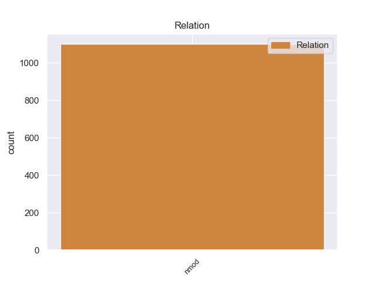
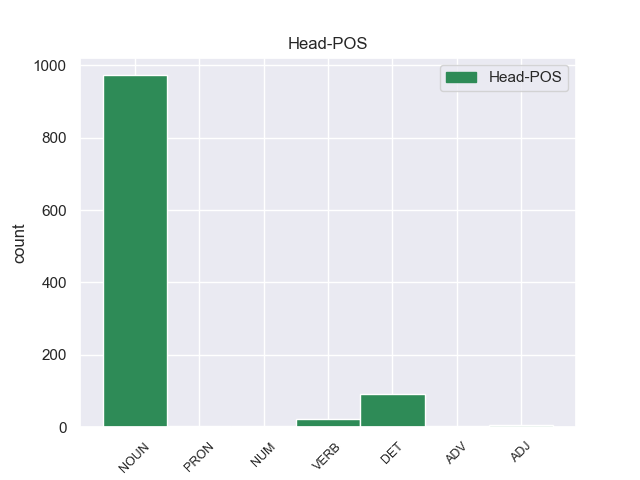
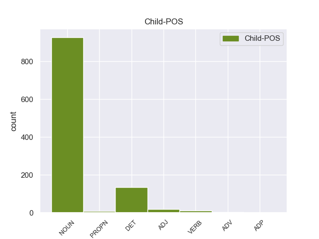

Distribution of features within this leaf



Agreement Rules sorted by frequency.
- When the dependent token is the nominal modifier(nmod) of the head token, and the head token is NOUN and the dependent token is NOUN.
1 Ευελπιστώ _ _ _ _ 0 _ _ _
2 ότι _ _ _ _ 0 _ _ _
3 η _ _ _ _ 0 _ _ _
4 απόφαση _ _ _ _ 0 _ _ _
5 αυτή _ _ _ _ 0 _ _ _
6 , _ _ _ _ 0 _ _ _
7 συμπεριλαμβανομένης _ _ _ _ 0 _ _ _
8 και _ _ _ _ 0 _ _ _
9 της _ _ _ _ 0 _ _ _
10 αιτιολογικής ο NOUN _ Case=Acc|Gender=Fem|Number=Sing 11 nmod _ _
11 έκθεσης έκθεσης NOUN _ Case=Acc|Gender=Fem|Number=Sing 0 _ _ _
12 που _ _ _ _ 0 _ _ _
13 την _ _ _ _ 0 _ _ _
14 συνοδεύει _ _ _ _ 0 _ _ _
15 , _ _ _ _ 0 _ _ _
16 θα _ _ _ _ 0 _ _ _
17 διαβιβαστεί _ _ _ _ 0 _ _ _
18 σ _ _ _ _ 0 _ _ _
19 τις _ _ _ _ 0 _ _ _
20 γαλλικές _ _ _ _ 0 _ _ _
21 αρχές _ _ _ _ 0 _ _ _
22 , _ _ _ _ 0 _ _ _
23 εφόσον _ _ _ _ 0 _ _ _
24 υπερψηφιστεί _ _ _ _ 0 _ _ _
25 από _ _ _ _ 0 _ _ _
26 το _ _ _ _ 0 _ _ _
27 Κοινοβούλιο _ _ _ _ 0 _ _ _
28 . _ _ _ _ 0 _ _ _
1 Το _ _ _ _ 0 _ _ _
2 άρθρο _ _ _ _ 0 _ _ _
3 9 _ _ _ _ 0 _ _ _
4 του _ _ _ _ 0 _ _ _
5 Πρωτοκόλλου _ _ _ _ 0 _ _ _
6 , _ _ _ _ 0 _ _ _
7 όπως _ _ _ _ 0 _ _ _
8 επεσήμανε _ _ _ _ 0 _ _ _
9 με _ _ _ _ 0 _ _ _
10 αυστηρότητα _ _ _ _ 0 _ _ _
11 η _ _ _ _ 0 _ _ _
12 Πρόεδρος _ _ _ _ 0 _ _ _
13 Fontaine _ _ _ _ 0 _ _ _
14 σ _ _ _ _ 0 _ _ _
15 τον _ _ _ _ 0 _ _ _
16 Εισαγγελέα _ _ _ _ 0 _ _ _
17 , _ _ _ _ 0 _ _ _
18 μας _ _ _ _ 0 _ _ _
19 απαλλάσσει _ _ _ _ 0 _ _ _
20 τελείως _ _ _ _ 0 _ _ _
21 από _ _ _ _ 0 _ _ _
22 οποιαδήποτε _ _ _ _ 0 _ _ _
23 νομική _ _ _ _ 0 _ _ _
24 διαδικασία _ _ _ _ 0 _ _ _
25 σε _ _ _ _ 0 _ _ _
26 σχέση _ _ _ _ 0 _ _ _
27 με _ _ _ _ 0 _ _ _
28 την _ _ _ _ 0 _ _ _
29 έκφραση έκφραση DET _ Case=Acc|Gender=Fem|Number=Sing 35 nmod _ _
30 γνώμης _ _ _ _ 0 _ _ _
31 ή _ _ _ _ 0 _ _ _
32 ψήφου _ _ _ _ 0 _ _ _
33 κατά _ _ _ _ 0 _ _ _
34 την _ _ _ _ 0 _ _ _
35 άσκηση άσκηση NOUN _ Case=Acc|Gender=Fem|Number=Sing 0 _ _ _
36 των _ _ _ _ 0 _ _ _
37 καθηκόντων _ _ _ _ 0 _ _ _
38 μας _ _ _ _ 0 _ _ _
39 ως _ _ _ _ 0 _ _ _
40 μέλη _ _ _ _ 0 _ _ _
41 αυτού _ _ _ _ 0 _ _ _
42 του _ _ _ _ 0 _ _ _
43 Κοινοβουλίου _ _ _ _ 0 _ _ _
44 . _ _ _ _ 0 _ _ _
1 Τόσο _ _ _ _ 0 _ _ _
2 το _ _ _ _ 0 _ _ _
3 ζήτημα _ _ _ _ 0 _ _ _
4 της _ _ _ _ 0 _ _ _
5 ασυλίας _ _ _ _ 0 _ _ _
6 όσο _ _ _ _ 0 _ _ _
7 και _ _ _ _ 0 _ _ _
8 η _ _ _ _ 0 _ _ _
9 αίτηση _ _ _ _ 0 _ _ _
10 για _ _ _ _ 0 _ _ _
11 άρση _ _ _ _ 0 _ _ _
12 της _ _ _ _ 0 _ _ _
13 έχουν _ _ _ _ 0 _ _ _
14 σχέση _ _ _ _ 0 _ _ _
15 μόνο _ _ _ _ 0 _ _ _
16 με _ _ _ _ 0 _ _ _
17 το _ _ _ _ 0 _ _ _
18 εάν _ _ _ _ 0 _ _ _
19 το _ _ _ _ 0 _ _ _
20 Δικαστήριο _ _ _ _ 0 _ _ _
21 μπορεί _ _ _ _ 0 _ _ _
22 να _ _ _ _ 0 _ _ _
23 εκδώσει _ _ _ _ 0 _ _ _
24 δεσμευτικά _ _ _ _ 0 _ _ _
25 βουλεύματα _ _ _ _ 0 _ _ _
26 για _ _ _ _ 0 _ _ _
27 τον _ _ _ _ 0 _ _ _
28 περιορισμό _ _ _ _ 0 _ _ _
29 της _ _ _ _ 0 _ _ _
30 ελεύθερης _ _ _ _ 0 _ _ _
31 μετακίνησης _ _ _ _ 0 _ _ _
32 των _ _ _ _ 0 _ _ _
33 βουλευτών _ _ _ _ 0 _ _ _
34 του _ _ _ _ 0 _ _ _
35 Ευρωπαϊκού _ _ _ _ 0 _ _ _
36 Κοινοβουλίου _ _ _ _ 0 _ _ _
37 ή _ _ _ _ 0 _ _ _
38 την _ _ _ _ 0 _ _ _
39 ελευθερία _ _ _ _ 0 _ _ _
40 τους _ _ _ _ 0 _ _ _
41 να _ _ _ _ 0 _ _ _
42 έρχονται έρχονται DET _ Case=Acc|Gender=Fem|Number=Sing 0 _ _ _
43 σε _ _ _ _ 0 _ _ _
44 επικοινωνία _ _ _ _ 0 _ _ _
45 με _ _ _ _ 0 _ _ _
46 άλλα _ _ _ _ 0 _ _ _
47 πρόσωπα πρόσωπα NOUN _ Case=Acc|Gender=Fem|Number=Sing 42 nmod _ _
48 . _ _ _ _ 0 _ _ _
1 Εδώ _ _ _ _ 0 _ _ _
2 και _ _ _ _ 0 _ _ _
3 ενάμισι _ _ _ _ 0 _ _ _
4 χρόνο _ _ _ _ 0 _ _ _
5 κοιτάζουμε _ _ _ _ 0 _ _ _
6 άπραγοι _ _ _ _ 0 _ _ _
7 τον _ _ _ _ 0 _ _ _
8 εντελώς _ _ _ _ 0 _ _ _
9 άνισο άνισο ADJ _ Case=Acc|Gender=Fem|Number=Sing 30 nmod _ _
10 πόλεμο _ _ _ _ 0 _ _ _
11 που _ _ _ _ 0 _ _ _
12 διεξάγουν _ _ _ _ 0 _ _ _
13 αυτοί _ _ _ _ 0 _ _ _
14 οι _ _ _ _ 0 _ _ _
15 δύο _ _ _ _ 0 _ _ _
16 αντίπαλοι _ _ _ _ 0 _ _ _
17 μεταξύ _ _ _ _ 0 _ _ _
18 τους _ _ _ _ 0 _ _ _
19 , _ _ _ _ 0 _ _ _
20 κοιτάζουμε _ _ _ _ 0 _ _ _
21 τα _ _ _ _ 0 _ _ _
22 τανκς _ _ _ _ 0 _ _ _
23 των _ _ _ _ 0 _ _ _
24 Ισραηλινών _ _ _ _ 0 _ _ _
25 να _ _ _ _ 0 _ _ _
26 καταστρέφουν _ _ _ _ 0 _ _ _
27 σπίτια _ _ _ _ 0 _ _ _
28 και _ _ _ _ 0 _ _ _
29 να _ _ _ _ 0 _ _ _
30 σκοτώνουν σκοτώνουν NOUN _ Case=Acc|Gender=Fem|Number=Sing 0 _ _ _
31 παλαιστίνιους _ _ _ _ 0 _ _ _
32 πολίτες _ _ _ _ 0 _ _ _
33 . _ _ _ _ 0 _ _ _
1 Πρόκειται _ _ _ _ 0 _ _ _
2 για _ _ _ _ 0 _ _ _
3 την _ _ _ _ 0 _ _ _
4 επίτευξη επίτευξης VERB _ Case=Acc|Gender=Fem|Number=Sing 0 _ _ _
5 θετικής _ _ _ _ 0 _ _ _
6 δήλωσης _ _ _ _ 0 _ _ _
7 αξιοπιστίας ο NOUN _ Case=Acc|Gender=Fem|Number=Sing 4 nmod _ _
8 για _ _ _ _ 0 _ _ _
9 το _ _ _ _ 0 _ _ _
10 οικονομικό _ _ _ _ 0 _ _ _
11 έτος _ _ _ _ 0 _ _ _
12 2003 _ _ _ _ 0 _ _ _
13 . _ _ _ _ 0 _ _ _
1 Η _ _ _ _ 0 _ _ _
2 Αστυνομία _ _ _ _ 0 _ _ _
3 απέκλεισε απέκλεισε VERB _ Case=Acc|Gender=Fem|Number=Sing 15 nmod _ _
4 την _ _ _ _ 0 _ _ _
5 πόλη _ _ _ _ 0 _ _ _
6 με _ _ _ _ 0 _ _ _
7 σκοπό _ _ _ _ 0 _ _ _
8 να _ _ _ _ 0 _ _ _
9 βρεί _ _ _ _ 0 _ _ _
10 τους _ _ _ _ 0 _ _ _
11 κρατούμενους _ _ _ _ 0 _ _ _
12 και _ _ _ _ 0 _ _ _
13 να _ _ _ _ 0 _ _ _
14 τους _ _ _ _ 0 _ _ _
15 ξαναβάλει ξαναβάλει NOUN _ Case=Acc|Gender=Fem|Number=Sing 0 _ _ _
16 σ _ _ _ _ 0 _ _ _
17 τη _ _ _ _ 0 _ _ _
18 φυλακή _ _ _ _ 0 _ _ _
19 » _ _ _ _ 0 _ _ _
20 , _ _ _ _ 0 _ _ _
21 δήλωσε _ _ _ _ 0 _ _ _
22 εκπρόσωπος _ _ _ _ 0 _ _ _
23 των _ _ _ _ 0 _ _ _
24 τοπικών _ _ _ _ 0 _ _ _
25 αρχών _ _ _ _ 0 _ _ _
26 . _ _ _ _ 0 _ _ _
1 Πρέπει _ _ _ _ 0 _ _ _
2 να _ _ _ _ 0 _ _ _
3 επισημανθεί _ _ _ _ 0 _ _ _
4 ότι _ _ _ _ 0 _ _ _
5 ο _ _ _ _ 0 _ _ _
6 Εισαγγελέας _ _ _ _ 0 _ _ _
7 Πλημμελειοδικών _ _ _ _ 0 _ _ _
8 υποστήριξε _ _ _ _ 0 _ _ _
9 σθεναρά _ _ _ _ 0 _ _ _
10 την _ _ _ _ 0 _ _ _
11 αίτηση _ _ _ _ 0 _ _ _
12 επιβολής _ _ _ _ 0 _ _ _
13 μέτρων _ _ _ _ 0 _ _ _
14 δικαστικής _ _ _ _ 0 _ _ _
15 επιτήρησης _ _ _ _ 0 _ _ _
16 που _ _ _ _ 0 _ _ _
17 υπέβαλαν _ _ _ _ 0 _ _ _
18 οι _ _ _ _ 0 _ _ _
19 ανακριτές _ _ _ _ 0 _ _ _
20 , _ _ _ _ 0 _ _ _
21 υπογραμμίζοντας _ _ _ _ 0 _ _ _
22 τη _ _ _ _ 0 _ _ _
23 σοβαρότητα _ _ _ _ 0 _ _ _
24 και _ _ _ _ 0 _ _ _
25 τη _ _ _ _ 0 _ _ _
26 φύση _ _ _ _ 0 _ _ _
27 της _ _ _ _ 0 _ _ _
28 υπόθεσης _ _ _ _ 0 _ _ _
29 και _ _ _ _ 0 _ _ _
30 χαρακτηρίζοντας _ _ _ _ 0 _ _ _
31 μάλιστα _ _ _ _ 0 _ _ _
32 την _ _ _ _ 0 _ _ _
33 αίτηση ο DET _ Case=Acc|Gender=Fem|Number=Sing 0 _ _ _
34 αυτή _ _ _ _ 0 _ _ _
35 ως _ _ _ _ 0 _ _ _
36 απαραίτητη ο DET _ Case=Acc|Gender=Fem|Number=Sing 33 nmod _ _
37 επί _ _ _ _ 0 _ _ _
38 της _ _ _ _ 0 _ _ _
39 αρχής _ _ _ _ 0 _ _ _
40 . _ _ _ _ 0 _ _ _
1 Ωστόσο _ _ _ _ 0 _ _ _
2 , _ _ _ _ 0 _ _ _
3 αυτό _ _ _ _ 0 _ _ _
4 δεν _ _ _ _ 0 _ _ _
5 πρέπει _ _ _ _ 0 _ _ _
6 να _ _ _ _ 0 _ _ _
7 χρησιμοποιηθεί _ _ _ _ 0 _ _ _
8 για _ _ _ _ 0 _ _ _
9 να _ _ _ _ 0 _ _ _
10 αποτρέψει _ _ _ _ 0 _ _ _
11 την _ _ _ _ 0 _ _ _
12 αύξηση _ _ _ _ 0 _ _ _
13 του _ _ _ _ 0 _ _ _
14 κόστους _ _ _ _ 0 _ _ _
15 ή _ _ _ _ 0 _ _ _
16 ως _ _ _ _ 0 _ _ _
17 ένα _ _ _ _ 0 _ _ _
18 πρόσθετο _ _ _ _ 0 _ _ _
19 γραφειοκρατικό _ _ _ _ 0 _ _ _
20 εμπόδιο _ _ _ _ 0 _ _ _
21 που _ _ _ _ 0 _ _ _
22 θα _ _ _ _ 0 _ _ _
23 δημιουργηθεί _ _ _ _ 0 _ _ _
24 για _ _ _ _ 0 _ _ _
25 να _ _ _ _ 0 _ _ _
26 αποτρέψει ο DET _ Case=Acc|Gender=Fem|Number=Sing 28 nmod _ _
27 την _ _ _ _ 0 _ _ _
28 επίτευξη επίτευξ VERB _ Case=Acc|Gender=Fem|Number=Sing 0 _ _ _
29 της _ _ _ _ 0 _ _ _
30 καλύτερης _ _ _ _ 0 _ _ _
31 δυνατής _ _ _ _ 0 _ _ _
32 τιμής _ _ _ _ 0 _ _ _
33 . _ _ _ _ 0 _ _ _
1 Το _ _ _ _ 0 _ _ _
2 1794 _ _ _ _ 0 _ _ _
3 οι _ _ _ _ 0 _ _ _
4 αγιορείτες _ _ _ _ 0 _ _ _
5 μοναχοί _ _ _ _ 0 _ _ _
6 Νύμφωνας _ _ _ _ 0 _ _ _
7 Χίος _ _ _ _ 0 _ _ _
8 και _ _ _ _ 0 _ _ _
9 Γρηγόριος _ _ _ _ 0 _ _ _
10 Χατζησταμάτης _ _ _ _ 0 _ _ _
11 ίδρυσαν _ _ _ _ 0 _ _ _
12 την _ _ _ _ 0 _ _ _
13 Ιερά _ _ _ _ 0 _ _ _
14 Μονή _ _ _ _ 0 _ _ _
15 της _ _ _ _ 0 _ _ _
16 Ευαγγελίστριας _ _ _ _ 0 _ _ _
17 , _ _ _ _ 0 _ _ _
18 η _ _ _ _ 0 _ _ _
19 οποία _ _ _ _ 0 _ _ _
20 τότε _ _ _ _ 0 _ _ _
21 ονομαζόταν _ _ _ _ 0 _ _ _
22 " _ _ _ _ 0 _ _ _
23 Νέο _ _ _ _ 0 _ _ _
24 Μοναστήρι _ _ _ _ 0 _ _ _
25 " _ _ _ _ 0 _ _ _
26 για _ _ _ _ 0 _ _ _
27 να _ _ _ _ 0 _ _ _
28 ξεχωρίζει ξεχωρίζει ADJ _ Case=Acc|Gender=Fem|Number=Sing 0 _ _ _
29 από _ _ _ _ 0 _ _ _
30 τα _ _ _ _ 0 _ _ _
31 παλαιότερα παλαιότερας NOUN _ Case=Acc|Gender=Fem|Number=Sing 28 nmod _ _
32 . _ _ _ _ 0 _ _ _
1 Ο _ _ _ _ 0 _ _ _
2 διάλογος _ _ _ _ 0 _ _ _
3 αυτός _ _ _ _ 0 _ _ _
4 συνεχίστηκε _ _ _ _ 0 _ _ _
5 την _ _ _ _ 0 _ _ _
6 1η _ _ _ _ 0 _ _ _
7 και _ _ _ _ 0 _ _ _
8 2α_Δεκεμβρίου_2001 _ _ _ _ 0 _ _ _
9 με _ _ _ _ 0 _ _ _
10 την _ _ _ _ 0 _ _ _
11 επίσκεψη επίσκεψη NOUN NOUN Case=Acc|Gender=Fem|Number=Sing 0 _ _ _
12 της _ _ _ _ 0 _ _ _
13 τρόικας _ _ _ _ 0 _ _ _
14 σ _ _ _ _ 0 _ _ _
15 την _ _ _ _ 0 _ _ _
16 Αβάνα Αβάνα PROPN PROPN Case=Acc|Gender=Fem|Number=Sing 11 nmod _ SpaceAfter=No
17 . _ _ _ _ 0 _ _ _
1 Οι _ _ _ _ 0 _ _ _
2 συμφωνίες _ _ _ _ 0 _ _ _
3 εταιρικής _ _ _ _ 0 _ _ _
4 σχέσης _ _ _ _ 0 _ _ _
5 και _ _ _ _ 0 _ _ _
6 συνεργασίας _ _ _ _ 0 _ _ _
7 που _ _ _ _ 0 _ _ _
8 έχουμε _ _ _ _ 0 _ _ _
9 συνάψει _ _ _ _ 0 _ _ _
10 με _ _ _ _ 0 _ _ _
11 καθεμία καθένας PRON PRON Case=Acc|Gender=Fem|Number=Sing|Person=3|PronType=Ind 0 _ _ _
12 από _ _ _ _ 0 _ _ _
13 τις _ _ _ _ 0 _ _ _
14 τρεις _ _ _ _ 0 _ _ _
15 χώρες χώρα NOUN NOUN Case=Acc|Gender=Fem|Number=Plur 11 nmod _ _
16 παρέχουν _ _ _ _ 0 _ _ _
17 μια _ _ _ _ 0 _ _ _
18 ενιαία _ _ _ _ 0 _ _ _
19 βάση _ _ _ _ 0 _ _ _
20 για _ _ _ _ 0 _ _ _
21 τη _ _ _ _ 0 _ _ _
22 συνεργασία _ _ _ _ 0 _ _ _
23 σε _ _ _ _ 0 _ _ _
24 ένα _ _ _ _ 0 _ _ _
25 ευρύ _ _ _ _ 0 _ _ _
26 φάσμα _ _ _ _ 0 _ _ _
27 πεδίων _ _ _ _ 0 _ _ _
28 , _ _ _ _ 0 _ _ _
29 από _ _ _ _ 0 _ _ _
30 τον _ _ _ _ 0 _ _ _
31 πολιτικό _ _ _ _ 0 _ _ _
32 διάλογο _ _ _ _ 0 _ _ _
33 , _ _ _ _ 0 _ _ _
34 το _ _ _ _ 0 _ _ _
35 εμπόριο _ _ _ _ 0 _ _ _
36 και _ _ _ _ 0 _ _ _
37 τις _ _ _ _ 0 _ _ _
38 επενδύσεις _ _ _ _ 0 _ _ _
39 μέχρι _ _ _ _ 0 _ _ _
40 τις _ _ _ _ 0 _ _ _
41 σχέσεις _ _ _ _ 0 _ _ _
42 με _ _ _ _ 0 _ _ _
43 την _ _ _ _ 0 _ _ _
44 κοινωνία _ _ _ _ 0 _ _ _
45 των _ _ _ _ 0 _ _ _
46 πολιτών _ _ _ _ 0 _ _ _
47 . _ _ _ _ 0 _ _ _
1 Ως _ _ _ _ 0 _ _ _
2 εισηγήτρια _ _ _ _ 0 _ _ _
3 της _ _ _ _ 0 _ _ _
4 εφαρμογής _ _ _ _ 0 _ _ _
5 τόσο _ _ _ _ 0 _ _ _
6 της _ _ _ _ 0 _ _ _
7 πρώτης _ _ _ _ 0 _ _ _
8 , _ _ _ _ 0 _ _ _
9 όσο _ _ _ _ 0 _ _ _
10 και _ _ _ _ 0 _ _ _
11 της _ _ _ _ 0 _ _ _
12 δεύτερης _ _ _ _ 0 _ _ _
13 τρέχουσας _ _ _ _ 0 _ _ _
14 φάσης ο ADV _ Case=Acc|Gender=Fem|Number=Sing 0 _ _ _
15 του _ _ _ _ 0 _ _ _
16 προγράμματος _ _ _ _ 0 _ _ _
17 ΣΩΚΡΑΤΗΣ _ _ _ _ 0 _ _ _
18 , _ _ _ _ 0 _ _ _
19 είμαι _ _ _ _ 0 _ _ _
20 ικανοποιημένη _ _ _ _ 0 _ _ _
21 με _ _ _ _ 0 _ _ _
22 αυτήν _ _ _ _ 0 _ _ _
23 τη _ _ _ _ 0 _ _ _
24 θετική _ _ _ _ 0 _ _ _
25 εξέλιξη εξέλιξη NOUN _ Case=Acc|Gender=Fem|Number=Sing 14 nmod _ _
26 . _ _ _ _ 0 _ _ _
1 Σ _ _ _ _ 0 _ _ _
2 το _ _ _ _ 0 _ _ _
3 μεταξύ _ _ _ _ 0 _ _ _
4 , _ _ _ _ 0 _ _ _
5 τα _ _ _ _ 0 _ _ _
6 κρατικά _ _ _ _ 0 _ _ _
7 μέσα _ _ _ _ 0 _ _ _
8 ενημέρωσης _ _ _ _ 0 _ _ _
9 της _ _ _ _ 0 _ _ _
10 Συρίας _ _ _ _ 0 _ _ _
11 μετέδωσαν _ _ _ _ 0 _ _ _
12 την _ _ _ _ 0 _ _ _
13 Κυριακή _ _ _ _ 0 _ _ _
14 ότι _ _ _ _ 0 _ _ _
15 " _ _ _ _ 0 _ _ _
16 το _ _ _ _ 0 _ _ _
17 Ανώτατο _ _ _ _ 0 _ _ _
18 Δικαστικό _ _ _ _ 0 _ _ _
19 Συμβούλιο _ _ _ _ 0 _ _ _
20 της _ _ _ _ 0 _ _ _
21 Συρίας _ _ _ _ 0 _ _ _
22 ακύρωσε _ _ _ _ 0 _ _ _
23 νομικές _ _ _ _ 0 _ _ _
24 διαδικασίες _ _ _ _ 0 _ _ _
25 σε _ _ _ _ 0 _ _ _
26 βάρος _ _ _ _ 0 _ _ _
27 προσωπικοτήτων _ _ _ _ 0 _ _ _
28 της _ _ _ _ 0 _ _ _
29 Αντιπολίτευσης _ _ _ _ 0 _ _ _
30 που _ _ _ _ 0 _ _ _
31 βρίσκονται _ _ _ _ 0 _ _ _
32 σ _ _ _ _ 0 _ _ _
33 το _ _ _ _ 0 _ _ _
34 εξωτερικό _ _ _ _ 0 _ _ _
35 , _ _ _ _ 0 _ _ _
36 έτσι _ _ _ _ 0 _ _ _
37 ώστε _ _ _ _ 0 _ _ _
38 να _ _ _ _ 0 _ _ _
39 μπορέσουν _ _ _ _ 0 _ _ _
40 να _ _ _ _ 0 _ _ _
41 επιστρέψουν _ _ _ _ 0 _ _ _
42 σ _ _ _ _ 0 _ _ _
43 τη _ _ _ _ 0 _ _ _
44 Συρία _ _ _ _ 0 _ _ _
45 για _ _ _ _ 0 _ _ _
46 να _ _ _ _ 0 _ _ _
47 συμμετάσχουν συμμετάσχουν NOUN _ Case=Acc|Gender=Fem|Number=Sing 0 _ _ _
48 σε _ _ _ _ 0 _ _ _
49 εθνικό _ _ _ _ 0 _ _ _
50 διάλογο _ _ _ _ 0 _ _ _
51 που _ _ _ _ 0 _ _ _
52 πρότεινε _ _ _ _ 0 _ _ _
53 ο _ _ _ _ 0 _ _ _
54 Μπασάρ _ _ _ _ 0 _ _ _
55 αλ _ _ _ _ 0 _ _ _
56 Άσαντ ο ADV _ Case=Acc|Gender=Fem|Number=Sing 47 nmod _ _
57 σ _ _ _ _ 0 _ _ _
58 τις _ _ _ _ 0 _ _ _
59 αρχές _ _ _ _ 0 _ _ _
60 του _ _ _ _ 0 _ _ _
61 μήνα _ _ _ _ 0 _ _ _
62 " _ _ _ _ 0 _ _ _
63 . _ _ _ _ 0 _ _ _
1 Για _ _ _ _ 0 _ _ _
2 τον _ _ _ _ 0 _ _ _
3 λόγο _ _ _ _ 0 _ _ _
4 αυτόν _ _ _ _ 0 _ _ _
5 θεωρούμε _ _ _ _ 0 _ _ _
6 σημαντικό _ _ _ _ 0 _ _ _
7 να _ _ _ _ 0 _ _ _
8 γίνεται _ _ _ _ 0 _ _ _
9 μεν _ _ _ _ 0 _ _ _
10 η _ _ _ _ 0 _ _ _
11 σχετική _ _ _ _ 0 _ _ _
12 εκπαίδευση _ _ _ _ 0 _ _ _
13 , _ _ _ _ 0 _ _ _
14 όχι _ _ _ _ 0 _ _ _
15 όμως _ _ _ _ 0 _ _ _
16 δύο _ _ _ _ 0 _ _ _
17 φορές _ _ _ _ 0 _ _ _
18 , _ _ _ _ 0 _ _ _
19 μία ένας NUM NUM Case=Nom|Gender=Fem|Number=Sing|NumType=Card 0 _ _ _
20 για _ _ _ _ 0 _ _ _
21 την _ _ _ _ 0 _ _ _
22 απόκτηση απόκτηση NOUN NOUN Case=Acc|Gender=Fem|Number=Sing 19 nmod _ _
23 της _ _ _ _ 0 _ _ _
24 άδειας _ _ _ _ 0 _ _ _
25 οδήγησης _ _ _ _ 0 _ _ _
26 και _ _ _ _ 0 _ _ _
27 μία _ _ _ _ 0 _ _ _
28 σ _ _ _ _ 0 _ _ _
29 το _ _ _ _ 0 _ _ _
30 πλαίσιο _ _ _ _ 0 _ _ _
31 της _ _ _ _ 0 _ _ _
32 κατάρτισης _ _ _ _ 0 _ _ _
33 . _ _ _ _ 0 _ _ _
1 να _ _ _ _ 0 _ _ _
2 απαιτηθεί _ _ _ _ 0 _ _ _
3 η _ _ _ _ 0 _ _ _
4 απελευθέρωση ο DET _ Case=Acc|Gender=Fem|Number=Sing 11 nmod _ _
5 όλων _ _ _ _ 0 _ _ _
6 των _ _ _ _ 0 _ _ _
7 πολιτικών _ _ _ _ 0 _ _ _
8 κρατουμένων _ _ _ _ 0 _ _ _
9 , _ _ _ _ 0 _ _ _
10 η _ _ _ _ 0 _ _ _
11 αποκατάσταση ο ADJ _ Case=Acc|Gender=Fem|Number=Sing 0 _ _ _
12 της _ _ _ _ 0 _ _ _
13 ελευθερίας _ _ _ _ 0 _ _ _
14 του _ _ _ _ 0 _ _ _
15 Τύπου _ _ _ _ 0 _ _ _
16 , _ _ _ _ 0 _ _ _
17 του _ _ _ _ 0 _ _ _
18 συνεταιρίζεσθαι _ _ _ _ 0 _ _ _
19 , _ _ _ _ 0 _ _ _
20 της _ _ _ _ 0 _ _ _
21 συγκρότησης _ _ _ _ 0 _ _ _
22 οργανώσεων _ _ _ _ 0 _ _ _
23 της _ _ _ _ 0 _ _ _
24 κοινωνίας _ _ _ _ 0 _ _ _
25 των _ _ _ _ 0 _ _ _
26 πολιτών _ _ _ _ 0 _ _ _
27 , _ _ _ _ 0 _ _ _
28 του _ _ _ _ 0 _ _ _
29 σχηματισμού _ _ _ _ 0 _ _ _
30 πολιτικών _ _ _ _ 0 _ _ _
31 κομμάτων _ _ _ _ 0 _ _ _
32 και _ _ _ _ 0 _ _ _
33 συνδικάτων _ _ _ _ 0 _ _ _
34 . _ _ _ _ 0 _ _ _
1 Ο _ _ _ _ 0 _ _ _
2 Αμπντάλα _ _ _ _ 0 _ _ _
3 αλ _ _ _ _ 0 _ _ _
4 Σενούσι _ _ _ _ 0 _ _ _
5 διέφυγε _ _ _ _ 0 _ _ _
6 σ _ _ _ _ 0 _ _ _
7 τη _ _ _ _ 0 _ _ _
8 Λιβύη _ _ _ _ 0 _ _ _
9 μετά _ _ _ _ 0 _ _ _
10 την _ _ _ _ 0 _ _ _
11 ανατροπή ανατροπή NOUN _ Case=Acc|Gender=Fem|Number=Sing 0 _ _ _
12 του _ _ _ _ 0 _ _ _
13 Μουαμάρ _ _ _ _ 0 _ _ _
14 αλ ο ADP _ Case=Acc|Gender=Fem|Number=Sing 11 nmod _ _
15 Καντάφι _ _ _ _ 0 _ _ _
16 , _ _ _ _ 0 _ _ _
17 καθώς _ _ _ _ 0 _ _ _
18 καταζητούνταν _ _ _ _ 0 _ _ _
19 από _ _ _ _ 0 _ _ _
20 το _ _ _ _ 0 _ _ _
21 Διεθνές _ _ _ _ 0 _ _ _
22 Ποινικό _ _ _ _ 0 _ _ _
23 Δικαστήριο _ _ _ _ 0 _ _ _
24 για _ _ _ _ 0 _ _ _
25 εγκλήματα _ _ _ _ 0 _ _ _
26 κατά _ _ _ _ 0 _ _ _
27 της _ _ _ _ 0 _ _ _
28 ανθρωπότητας _ _ _ _ 0 _ _ _
29 τις _ _ _ _ 0 _ _ _
30 δεκαετίες _ _ _ _ 0 _ _ _
31 των _ _ _ _ 0 _ _ _
32 1980 _ _ _ _ 0 _ _ _
33 και _ _ _ _ 0 _ _ _
34 1990 _ _ _ _ 0 _ _ _
35 . _ _ _ _ 0 _ _ _
Disagree Examples:
1 Κατά _ _ _ _ 0 _ _ _
2 τα _ _ _ _ 0 _ _ _
3 βυζαντινά _ _ _ _ 0 _ _ _
4 χρόνια _ _ _ _ 0 _ _ _
5 , _ _ _ _ 0 _ _ _
6 το _ _ _ _ 0 _ _ _
7 κέντρο κέντρο NOUN NOUN Case=Nom|Gender=Neut|Number=Sing 0 _ _ _
8 λατρείας λατρεία NOUN NOUN Case=Gen|Gender=Fem|Number=Sing 7 nmod _ _
9 μεταφέρθηκε _ _ _ _ 0 _ _ _
10 σ _ _ _ _ 0 _ _ _
11 τη _ _ _ _ 0 _ _ _
12 θέση _ _ _ _ 0 _ _ _
13 μιας _ _ _ _ 0 _ _ _
14 νεκρόπολης _ _ _ _ 0 _ _ _
15 , _ _ _ _ 0 _ _ _
16 όπου _ _ _ _ 0 _ _ _
17 σήμερα _ _ _ _ 0 _ _ _
18 διασώζονται _ _ _ _ 0 _ _ _
19 δύο _ _ _ _ 0 _ _ _
20 παλαιοχριστιανικές _ _ _ _ 0 _ _ _
21 εκκλησίες _ _ _ _ 0 _ _ _
22 . _ _ _ _ 0 _ _ _
1 Ειδικότερα _ _ _ _ 0 _ _ _
2 , _ _ _ _ 0 _ _ _
3 η _ _ _ _ 0 _ _ _
4 Τουρκία _ _ _ _ 0 _ _ _
5 έχει _ _ _ _ 0 _ _ _
6 υιοθετήσει _ _ _ _ 0 _ _ _
7 ένα _ _ _ _ 0 _ _ _
8 εθνικό _ _ _ _ 0 _ _ _
9 πρόγραμμα πρόγραμμα NOUN NOUN Case=Acc|Gender=Neut|Number=Sing 0 _ _ _
10 για _ _ _ _ 0 _ _ _
11 την _ _ _ _ 0 _ _ _
12 υιοθέτηση υιοθέτηση NOUN NOUN Case=Acc|Gender=Fem|Number=Sing 9 nmod _ _
13 του _ _ _ _ 0 _ _ _
14 κεκτημένου _ _ _ _ 0 _ _ _
15 προκειμένου _ _ _ _ 0 _ _ _
16 να _ _ _ _ 0 _ _ _
17 εκπληρώσει _ _ _ _ 0 _ _ _
18 όλες _ _ _ _ 0 _ _ _
19 τις _ _ _ _ 0 _ _ _
20 προτεραιότητες _ _ _ _ 0 _ _ _
21 της _ _ _ _ 0 _ _ _
22 εταιρικής _ _ _ _ 0 _ _ _
23 σχέσης _ _ _ _ 0 _ _ _
24 . _ _ _ _ 0 _ _ _
1 Ειδικότερα _ _ _ _ 0 _ _ _
2 , _ _ _ _ 0 _ _ _
3 η _ _ _ _ 0 _ _ _
4 Τουρκία _ _ _ _ 0 _ _ _
5 έχει _ _ _ _ 0 _ _ _
6 υιοθετήσει _ _ _ _ 0 _ _ _
7 ένα _ _ _ _ 0 _ _ _
8 εθνικό _ _ _ _ 0 _ _ _
9 πρόγραμμα _ _ _ _ 0 _ _ _
10 για _ _ _ _ 0 _ _ _
11 την _ _ _ _ 0 _ _ _
12 υιοθέτηση υιοθέτηση NOUN NOUN Case=Acc|Gender=Fem|Number=Sing 0 _ _ _
13 του _ _ _ _ 0 _ _ _
14 κεκτημένου κτώμαι NOUN NOUN Case=Gen|Gender=Neut|Number=Sing 12 nmod _ _
15 προκειμένου _ _ _ _ 0 _ _ _
16 να _ _ _ _ 0 _ _ _
17 εκπληρώσει _ _ _ _ 0 _ _ _
18 όλες _ _ _ _ 0 _ _ _
19 τις _ _ _ _ 0 _ _ _
20 προτεραιότητες _ _ _ _ 0 _ _ _
21 της _ _ _ _ 0 _ _ _
22 εταιρικής _ _ _ _ 0 _ _ _
23 σχέσης _ _ _ _ 0 _ _ _
24 . _ _ _ _ 0 _ _ _
1 Επίσης _ _ _ _ 0 _ _ _
2 , _ _ _ _ 0 _ _ _
3 η _ _ _ _ 0 _ _ _
4 Επιτροπή _ _ _ _ 0 _ _ _
5 θέλει _ _ _ _ 0 _ _ _
6 να _ _ _ _ 0 _ _ _
7 απαγορεύσει _ _ _ _ 0 _ _ _
8 την _ _ _ _ 0 _ _ _
9 εφαρμογή εφαρμογή NOUN NOUN Case=Acc|Gender=Fem|Number=Sing 0 _ _ _
10 των _ _ _ _ 0 _ _ _
11 κριτηρίων κριτήριο NOUN NOUN Case=Gen|Gender=Neut|Number=Plur 9 nmod _ _
12 που _ _ _ _ 0 _ _ _
13 σχετίζονται _ _ _ _ 0 _ _ _
14 με _ _ _ _ 0 _ _ _
15 την _ _ _ _ 0 _ _ _
16 παραγωγή _ _ _ _ 0 _ _ _
17 ενός _ _ _ _ 0 _ _ _
18 προϊόντος _ _ _ _ 0 _ _ _
19 . _ _ _ _ 0 _ _ _
1 Επίσης _ _ _ _ 0 _ _ _
2 , _ _ _ _ 0 _ _ _
3 η _ _ _ _ 0 _ _ _
4 Επιτροπή _ _ _ _ 0 _ _ _
5 θέλει _ _ _ _ 0 _ _ _
6 να _ _ _ _ 0 _ _ _
7 απαγορεύσει _ _ _ _ 0 _ _ _
8 την _ _ _ _ 0 _ _ _
9 εφαρμογή _ _ _ _ 0 _ _ _
10 των _ _ _ _ 0 _ _ _
11 κριτηρίων _ _ _ _ 0 _ _ _
12 που _ _ _ _ 0 _ _ _
13 σχετίζονται _ _ _ _ 0 _ _ _
14 με _ _ _ _ 0 _ _ _
15 την _ _ _ _ 0 _ _ _
16 παραγωγή παραγωγή NOUN NOUN Case=Acc|Gender=Fem|Number=Sing 0 _ _ _
17 ενός _ _ _ _ 0 _ _ _
18 προϊόντος προϊόν NOUN NOUN Case=Gen|Gender=Neut|Number=Sing 16 nmod _ SpaceAfter=No
19 . _ _ _ _ 0 _ _ _